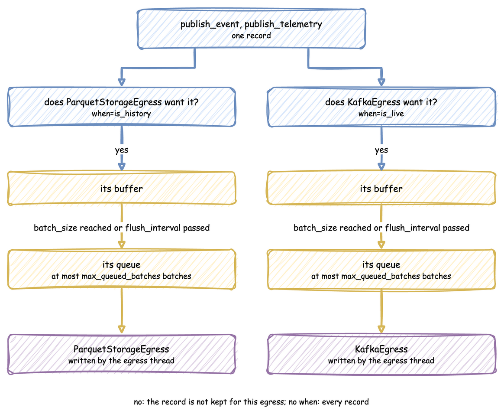

Batching and Delivery
A published record does not go straight to a sink. It is added to a buffer for each egress, the buffer is handed to that egress's queue as one batch, and the egress thread writes the batch. This page covers which egress receives a record, when a batch is handed over, and what happens when a sink cannot keep up.

Delivery to Several Sinks
Every attached provider receives every record. Each has its own queue, so attaching a stream sink and a lake sink writes the same dataset to both in a single run, rather than needing one run per sink with a matching seed.
app.add_egress(stream).add_egress(lake) # both receive every record
Pass when to route records instead of duplicating them. The predicate takes one record and returns True to send it to that provider, which reads the same way as the path_router that ParquetStorageEgress already accepts:
app.add_egress(stream, when=lambda r: r["timestamp"] >= hot_from) # hot tail
app.add_egress(lake, when=lambda r: r["timestamp"] < hot_from) # cold history
app.add_egress(audit) # no predicate: everything
A provider with no predicate receives everything, so the two can be mixed. Records matching no predicate are simply not written anywhere, which is how you drop them.
Batch Size and Flush Interval
Both the environment and the connectors support tuning for optimal throughput and network usage:
batch_size
The maximum number of records to buffer in memory before triggering a flush.
* Tuning Guide: In fast-forward batch mode (factor=0.0), set this to a high value (such as 5000 or 10000) to maximize write throughput and produce highly compressed Parquet chunks.
flush_interval
The maximum number of simulation seconds to wait before flushing the memory buffer, even if batch_size has not been reached. At factor=0 the timer is not started, because simulation time is detached from the wall clock, until a go_live_at switches the run to real time.
* Tuning Guide: In real-time mode (factor=1.0), set this to a low value (such as 0.5 or 1.0 seconds) to keep downstream UI dashboards responsive.
Per-provider cadence
with_batching sets the default, and both values can be overridden per sink by passing them on add_egress. Each provider buffers separately, so memory is the sum of the buffers. See Backfill Then Go Live in One Run.
The two limits are an OR, so the effective batch is the smaller of batch_size and what arrives within flush_interval. A high size with a short interval means the size never governs, which is reported once per run.
app.with_batching(batch_size=500, flush_interval=1.0) # the default for every sink
app.add_egress(stream, batch_size=50, flush_interval=0.5) # small and often
app.add_egress(lake, batch_size=200_000) # large files, the default interval
Defaults
| Setting | Default | Set with |
|---|---|---|
batch_size |
500 | with_batching, or per egress on add_egress |
flush_interval |
1.0 simulation seconds | with_batching, or per egress on add_egress |
max_queued_batches |
2000 | with_batching |
drain_stall_seconds |
30.0 seconds | with_batching |
The timer warning is given when one egress flushes on its timer 20 times in a row, each time holding less than a quarter of its batch_size.
app.with_batching(
batch_size=5_000, # records per batch
flush_interval=1.0, # simulation seconds; not used at factor=0
max_queued_batches=2_000, # a full queue makes the simulation wait
drain_stall_seconds=30.0, # how long teardown waits for a queue that stopped
)
Queues and Teardown
Each egress has its own queue, holding at most max_queued_batches batches. When a queue is full, the simulation waits for room, so a sink that cannot keep up slows the simulation instead of building a backlog. When a queue stays full for drain_stall_seconds, the sink has stopped consuming, and the run raises RuntimeError rather than losing records.
Teardown flushes every buffer, then waits for the queues to drain. It keeps waiting while the queues shrink, and gives up only when they have not shrunk for drain_stall_seconds. Records still queued at that point are lost, and a warning names the sinks that held them.
Same Settings in Each API
| Setting | Builder | YAML | Low-level env.setup_egress |
|---|---|---|---|
| Defaults for every egress | with_batching(...) |
batching: section |
batch_size, flush_interval, max_queued_batches, drain_stall_seconds |
| Per egress size and interval | add_egress(p, batch_size=, flush_interval=) |
batch_size, flush_interval on the egress entry |
batch_sizes, flush_intervals, one entry per provider |
| Predicate | add_egress(p, when=) |
when on the egress entry: history, live or a !python function |
predicates, one entry per provider |
The low-level lists are matched to the providers by position, and None in a list means the default. setup_egress also takes lag_monitor_interval, the simulation seconds between lag records, 1.0 by default. None or 0 turns the lag monitor off.
env = DynamicRealtimeEnvironment(factor=0.0)
env.setup_egress(
[stream, lake],
batch_size=500, # defaults for every provider
flush_interval=1.0,
predicates=[None, lambda r: r["stream_type"] == "event"], # by position
batch_sizes=[50, None], # None: the default
flush_intervals=[0.5, None],
)
The same settings in a blueprint:
# The batching settings of the Batching and Delivery page, as a blueprint.
# Run it with: ddes run batching.yaml
simulation:
sim_id: Line_A
factor: 0
# when: history and when: live split the records at this instant
logical_start_time: -1d
go_live_at: now
# Defaults for every egress, the arguments of with_batching
batching:
batch_size: 500
flush_interval: 1.0
max_queued_batches: 2000
drain_stall_seconds: 30
egress:
# Small and often for this sink; the other uses the defaults
- type: Console
batch_size: 50
flush_interval: 0.5
# Only the records stamped before go_live_at
- type: Console
when: history
resources:
lathe: {current_cap: 1, max_cap: 1}
run:
until: 60